Análisis exploratorio de datos
Christian Ballejo ![]()
Introducción
El análisis exploratorio de datos (conocido como EDA, su sigla en inglés) es un enfoque de análisis fundamental para resumir y visualizar las características importantes de un conjunto de datos.
John Tukey, estadístico estadounidense, fue uno de los principales impulsores de este enfoque. En 1977 publicó el libro Exploratory Data Analysis, donde, entre otras contribuciones, introdujo el gráfico boxplot (diagrama de caja y bigotes).
En términos sencillos, antes de avanzar hacia el análisis formal o la construcción de modelos estadísticos, resulta esencial explorar, conocer y describir las variables presentes en nuestra tabla de datos.
Entre los principales objetivos perseguidos por EDA se encuentran:
- Conocer la estructura de la tabla de datos y sus tipos de variable.
- Detectar observaciones incompletas (valores missing o
NA). - Explorar la distribución de las variables de interés a partir de:
- Estadísticos descriptivos
- Representaciones gráficas
- Detectar valores atípicos (outliers).
Aclaración
En este documento utilizaremos funciones del lenguaje R basadas en la filosofía tidyverse, junto con otros paquetes diseñados para tareas específicas. Esto no implica que no se puedan emplear funciones del R base; sin embargo, el ecosistema tidyverse facilita la comprensión y legibilidad del código.
Presentaremos estas diferentes funciones de distintos paquetes que pueden servir en cada etapa de un EDA. Los paquetes con los que trabajaremos son:
tidyverseskimrdlookrjanitor
Nota: Algunos paquetes, como dlookr, pueden generar falsos positivos en la detección del antivirus durante el proceso de instalación. Sugerimos desactivar momentáneamente el antivirus para evitar inconvenientes.
Una vez instalados, podemos activar los paquetes con el siguiente código:
Se recomienda cargar tidyverse al final de la lista para evitar conflictos con funciones que puedan solaparse entre paquetes.
Es importante destacar que no existe un único camino y/o función para realizar un análisis exploratorio. Esta selección de herramientas puede adaptarse según las preferencias y necesidades de cada usuario. Por lo tanto, quienes ya tengan familiaridad con otras funciones o paquetes pueden continuar utilizándolos sin inconvenientes.
Para ilustrar los pasos del análisis exploratorio, utilizaremos un archivo con datos ficticios llamado “datos2.txt”, que contiene variables de distintos tipos.
Conocer la estructura de la tabla de datos y sus tipos de variable
El primer paso en la exploración de un conjunto de datos es conocer su estructura y tamaño:
El tamaño se refiere a la cantidad de observaciones (filas) y de variables (columnas).
La estructura incluye cómo están organizadas las variables, qué tipo de datos contiene cada una y qué categorías o valores pueden tomar.
Comenzaremos por cargar los datos de ejemplo con la función read_csv2() de tidyverse:
datos <- read_csv2("datos/datos2.txt")Una vez cargados los datos, la función glimpse() permite obtener una visión general de la tabla:
glimpse(datos)Rows: 74
Columns: 7
$ id <dbl> 1, 2, 3, 4, 5, 6, 7, 8, 9, 10, 11, 12, 13, 14, 15, 16, 17, 18,…
$ sexo <chr> "M", "M", "M", "M", "M", "M", "M", "M", NA, "F", "F", "M", "F"…
$ edad <dbl> 76, 68, 50, 49, 51, 68, 70, 64, 60, 57, 83, 76, 27, 34, 17, 45…
$ peso <dbl> 71, 71, 79, 71, 87, 75, 80, 83, 69, 73, 60, 70, 648, 718, 61, …
$ talla <dbl> 167, 164, 164, 164, 1675, 170, 166, 160, 160, 155, 155, 167, 1…
$ trabaja <lgl> FALSE, FALSE, FALSE, TRUE, TRUE, FALSE, NA, TRUE, TRUE, TRUE, …
$ fecha <date> 2020-10-20, 2020-10-20, 2020-10-20, 2020-11-05, 2020-11-05, 2…Esta función nos informa que la tabla contiene, por ejemplo, 74 observaciones y 7 variables, mostrando el tipo de dato de cada una y los primeros valores que aparecen.
Entre los tipos de datos más comunes que podemos encontrar se incluyen:
int(integer): números enteros.dbl(double): números reales.lgl(logical): valores lógicos (TRUE,FALSE).chr(character): texto o cadenas de caracteres.Date: fechas.fct(factor): variables categóricas con niveles.dttm(date-time): fechas y horas.
Esta primera revisión de la estructura suele complementarse con el diccionario de datos, un recurso fundamental que describe el significado, tipo, unidad y codificación de cada variable. Este diccionario puede acompañar tanto a bases de datos generadas en investigaciones propias (fuentes primarias) como a datos provenientes de fuentes secundarias.
Es importante tener en cuenta que el tipo de dato en R no siempre coincide con la naturaleza estadística de la variable. Por ejemplo:
Una variable codificada como
dblpuede representar una medida cuantitativa continua, como la edad o el peso.Pero también puede representar una variable cualitativa codificada con números. Por ejemplo, si una variable que registra respuestas “Sí” y “No” fue codificada como
1y0, su tipo de dato será numérico (dbloint), aunque conceptualmente sea una variable categórica.
Por esta razón, además de inspeccionar el tipo de datos en R, es importante revisar el significado y el uso previsto de cada variable dentro del contexto del análisis.
Detectar observaciones incompletas
Los valores perdidos o faltantes (conocidos como missing en inglés), representados en R por el valor especial NA, constituyen un desafío importante en el análisis de datos. Su presencia puede afectar la calidad del análisis y condicionar las decisiones estadísticas posteriores.
Existen numerosos enfoques para el tratamiento de valores faltantes, incluyendo técnicas de imputación y modelado específico. Sin embargo, en este curso nos enfocaremos exclusivamente en cómo detectar, contabilizar y, en algunos casos, excluir valores faltantes utilizando funciones del lenguaje R.
Una forma sencilla de detectar valores faltantes es mediante la función count() del paquete dplyr. Al aplicarla a una variable, la salida incluye una fila adicional que informa cuántos valores NA hay:
datos |>
count(trabaja)# A tibble: 3 × 2
trabaja n
<lgl> <int>
1 FALSE 26
2 TRUE 39
3 NA 9Una alternativa más completa es la función find_na() del paquete dlookr (Ryu 2024):
find_na(datos, rate = T) id sexo edad peso talla trabaja fecha
0.000 4.054 0.000 0.000 0.000 12.162 0.000 Esta función se puede aplicar al conjunto de datos completo y devuelve, para cada variable, la cantidad y el porcentaje de valores NA. Por ejemplo, podríamos observar que la variable sexo tiene alrededor de un 4 % de valores faltantes, y la variable trabaja, algo más del 12 %.
Estos porcentajes pueden ayudarnos a decidir si una variable debe incluirse en un análisis o si es conveniente excluir ciertas observaciones con datos incompletos, siempre que los NA sean el resultado de una ausencia real de información.
El mismo paquete trae una función gráfica llamada plot_na_pareto(), que genera un gráfico de barras ordenados por frecuencia de valores faltantes:
plot_na_pareto(datos, only_na = T)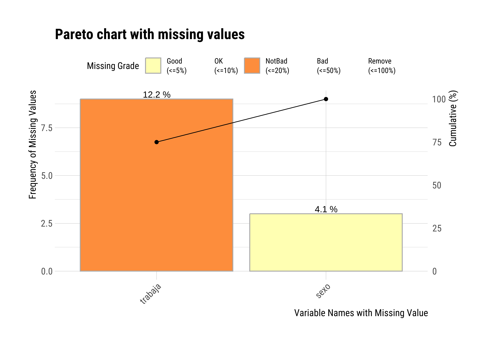
Finalmente, para un diagnóstico más integral de la calidad de las variables, puede utilizarse la función diagnose():
diagnose(datos)# A tibble: 7 × 6
variables types missing_count missing_percent unique_count unique_rate
<chr> <chr> <int> <dbl> <int> <dbl>
1 id numeric 0 0 74 1
2 sexo character 3 4.05 3 0.0405
3 edad numeric 0 0 45 0.608
4 peso numeric 0 0 56 0.757
5 talla numeric 0 0 38 0.514
6 trabaja logical 9 12.2 3 0.0405
7 fecha Date 0 0 11 0.149 Esta función ofrece un resumen detallado que incluye el tipo de variable, la cantidad de valores faltantes, la proporción de valores únicos, entre otros indicadores de utilidad para la exploración inicial.
Conocer la distribución de las variables de interés
Resumir variables cuantitativas
La instalación básica de R tiene incorporadas múltiples funciones estadísticas que permiten calcular medidas resumen para variables cuantitativas. Estas funciones pueden integrarse a la función summarise() de tidyverse.
Medidas de tendencia central
Las medidas de tendencia central forman parte del grupo de medidas de posición o localización, pero su objetivo principal es resumir la información en torno a un valor que representa el “centro” de la distribución. Es decir, un valor respecto al cual tienden a agruparse los demás valores.
Podemos obtener la media y la mediana de nuestros datos con el siguiente código:
# A tibble: 1 × 2
media mediana
<dbl> <dbl>
1 48.1 52.5En cambio, R base no incluye una función específica para calcular la moda. Para obtenerla, debemos escribir una función propia o utilizar algún paquete adicional que la implemente (por ejemplo, modeest::mlv()).
Medidas de posición
Las medidas de posición dividen los datos en grupos con igual número de observaciones. Entre las más utilizadas se encuentran los cuartiles y percentiles.
La función quantile() del paquete base stats permite calcular cuartiles u otros percentiles. Por ejemplo, para calcular los cuartiles Q1 y Q3, indicamos en el argumento probs los valores 0.25 y 0.75:
datos |>
summarise(
# Primer cuartil
cuartil1 = quantile(edad, probs = 0.25),
# Tercer cuartil
cuartil3 = quantile(edad, probs = 0.75)
)# A tibble: 1 × 2
cuartil1 cuartil3
<dbl> <dbl>
1 28 64Para obtener el mínimo y máximo de estos valores numéricos usamos el siguiente código:
Medidas de dispersión
Las medidas de dispersión nos permiten conocer cuán dispersos o variables son los valores dentro del conjunto de datos.
Entre las más clásicas se encuentran la varianza y el desvío estándar, que se calculan fácilmente con las funciones var() y sd():
# A tibble: 1 × 2
varianza desvio
<dbl> <dbl>
1 405. 20.1También puede ser útil calcular el rango, que se obtiene como la diferencia entre el valor máximo y el mínimo, y el rango intercuartílico (RIC), mediante IQR():
datos |>
summarise(
# Rango
rango = max(edad) - min(edad),
# Rango intercuartílico
ric = IQR(edad)
)# A tibble: 1 × 2
rango ric
<dbl> <dbl>
1 73 36El paquete dlookr ofrece la función describe() para generar un resumen completo de las variables numéricas:
describe(datos, -id)# A tibble: 3 × 26
described_variables n na mean sd se_mean IQR skewness kurtosis
<chr> <int> <int> <dbl> <dbl> <dbl> <dbl> <dbl> <dbl>
1 edad 74 0 48.1 20.1 2.34 36 -0.211 -1.11
2 peso 74 0 358. 323. 37.6 626. 0.451 -1.41
3 talla 74 0 363. 505. 58.7 12.8 2.19 2.90
# ℹ 17 more variables: p00 <dbl>, p01 <dbl>, p05 <dbl>, p10 <dbl>, p20 <dbl>,
# p25 <dbl>, p30 <dbl>, p40 <dbl>, p50 <dbl>, p60 <dbl>, p70 <dbl>,
# p75 <dbl>, p80 <dbl>, p90 <dbl>, p95 <dbl>, p99 <dbl>, p100 <dbl>Esta función puede aplicarse directamente sobre todo el conjunto de datos. Si bien selecciona automáticamente las variables numéricas, en este caso estamos excluyendo explícitamente la variable id, ya que un identificador no tiene interés estadístico.
El resumen que devuelve incluye:
na: cantidad de observaciones con datos y conNA.mean: media aritmética.sd: desvío estándar de la media.se_mean: error estándar de la media.IQR: rango intercuartílico.Medidas de forma como la simetría (
skewness) y la curtosis (kurtosis).Percentiles, incluyendo la mediana (
P50) y los cuartiles (P25yP75).
Resumir variables cualitativas
Las variables cualitativas o categóricas pueden encontrarse en R bajo los tipos de dato character o factor. En ocasiones será necesario convertirlas a factor, ya que este tipo permite aplicar ciertos procedimientos específicos para variables categóricas.
Frecuencias
Podemos resumir individualmente variables cualitativas mediante las frecuencias absolutas y relativas de sus categorías. La función count() de dplyr nos muestra el conteo absoluto:
datos |>
count(sexo)# A tibble: 3 × 2
sexo n
<chr> <int>
1 F 27
2 M 44
3 <NA> 3En la salida se incluirán, además de las categorías presentes, las observaciones con valores faltantes (NA).
La inclusión o no de los valores faltantes dependerá del propósito del análisis. Para excluirlos, podemos utilizar drop_na():
# A tibble: 2 × 2
sexo n
<chr> <int>
1 F 27
2 M 44Para obtener frecuencias relativas en porcentaje:
datos |>
count(sexo) |>
# Saltea los valores NA
drop_na() |>
# Transforma a porcentajes
mutate(porc = 100 * n / sum(n))# A tibble: 2 × 3
sexo n porc
<chr> <int> <dbl>
1 F 27 38.0
2 M 44 62.0Redondeamos el valor del porcentaje con round():
datos |>
count(sexo) |>
# Saltea los valores NA
drop_na() |>
# Transforma a porcentajes y redondea decimales
mutate(
porc = 100 * n / sum(n),
porc = round(porc, digits = 2)
)# A tibble: 2 × 3
sexo n porc
<chr> <int> <dbl>
1 F 27 38.0
2 M 44 62.0El paquete janitor (Firke 2024) ofrece una alternativa más completa mediante la función tabyl():
datos |>
tabyl(sexo) sexo n percent valid_percent
F 27 0.36486486 0.3802817
M 44 0.59459459 0.6197183
<NA> 3 0.04054054 NAEsta función muestra tanto frecuencias absolutas como relativas, incluyendo y excluyendo los valores NA (porcentaje sobre el total de valores válidos).
Podemos mejorar la presentación combinando otras funciones del paquete:
datos |>
# Excluímos valores NA
tabyl(sexo, show_na = F) |>
# Añadimos totales por fila
adorn_totals(where = "row") |>
# Redondea porcentajes a 2 decimales
adorn_pct_formatting(digits = 2) sexo n percent
F 27 38.03%
M 44 61.97%
Total 71 100.00%Tablas de contingencia
La forma más adecuada de describir la relación entre dos variables cualitativas es a través de una tabla de contingencia, en la cual:
Las filas representan las categorías de una variable.
Las columnas representan las categorías de otra variable.
Las celdas muestran el número de observaciones correspondientes a cada combinación de categorías.
La función tabyl() también permite crear este tipo de tablas. A continuación, un ejemplo entre sexo y trabaja (aunque trabaja sea lógica, puede tratarse como categórica):
datos |>
tabyl(sexo, trabaja) sexo FALSE TRUE NA_
F 8 15 4
M 17 22 5
<NA> 1 2 0Recordemos que el orden dentro de los paréntesis de la función es igual al de los índices, el primer argumento es la variable que aparecerá en las filas y el segundo la variable de las columnas. Por ese motivo, en la tabla de contingencia absoluta tenemos sexo en las filas y trabaja en las columnas.
Se puede mejorar la tabla excluyendo los valores NA y agregando totales por fila:
datos |>
# Excluímos valores NA
tabyl(sexo, trabaja, show_na = F) |>
# Añadimos totales por fila
adorn_totals(where = "row") sexo FALSE TRUE
F 8 15
M 17 22
Total 25 37Para calcular frecuencias relativas porcentuales por columna usamos el siguiente código:
datos |>
# Excluímos valores NA
tabyl(sexo, trabaja, show_na = F) |>
# Añadimos totales
adorn_totals(where = "row") |>
# Añadimos porcentajes por columna
adorn_percentages(denominator = "col") |>
# Redondea porcentajes a 2 decimales
adorn_pct_formatting(digits = 2) sexo FALSE TRUE
F 32.00% 40.54%
M 68.00% 59.46%
Total 100.00% 100.00%Calculamos frecuencias relativas porcentuales por fila:
datos |>
# Excluímos valores NA
tabyl(sexo, trabaja, show_na = F) |>
# Añadimos totales por columna
adorn_totals(where = "col") |>
# Añadimos porcentajes por fila
adorn_percentages(denominator = "row") |>
# Redondea porcentajes a 2 decimales
adorn_pct_formatting(digits = 2) sexo FALSE TRUE Total
F 34.78% 65.22% 100.00%
M 43.59% 56.41% 100.00%Cambiando el argumento denominator por "all" se calculan frecuencias relativas al total:
datos |>
# Excluímos valores NA
tabyl(sexo, trabaja, show_na = F) |>
# Añadimos totales por columna
adorn_totals(where = "col") |>
# Añadimos porcentajes al total
adorn_percentages(denominator = "all") |>
# Redondea porcentajes a 2 decimales
adorn_pct_formatting(digits = 2) sexo FALSE TRUE Total
F 12.90% 24.19% 37.10%
M 27.42% 35.48% 62.90%Explorar variables mediante gráficos
Uno de los aportes más importantes de John Tukey al análisis de datos es la incorporación de los gráficos como herramienta exploratoria. A través de representaciones visuales podemos detectar rápidamente patrones, anomalías, valores extremos, asimetrías o relaciones entre variables.
En R, los gráficos más útiles para explorar la distribución univariada de las variables son:
Para variables cualitativas: gráficos de barras
Para variables cuantitativas: histogramas, gráficos de densidad, boxplots y violin plots
-
Cuando queremos explorar la relación entre dos o más variables, los tipos de gráficos más comunes incluyen:
Diagramas de dispersión (puntos)
Gráficos de líneas
Gráficos de mosaico para variables categóricas cruzadas
El lenguaje R soporta una serie de sistemas gráficos asociados a paquetes como graphics, lattice, ggplot2, etc. que sirven de base incluso para otros paquetes con funciones más específicas. Actualmente el estándar gráfico en R es ggplot2.
En el documento dedicado a tidyverse ya explicamos cómo funciona ggplot2. Aquí nos concentraremos únicamente en aplicar distintos elementos geométricos (geoms) para representar las variables según su tipo.
Barras (univariado)
El gráfico de barras permite visualizar la frecuencia de las categorías de una variable cualitativa:
datos |>
# Omitimos los NA de sexo
drop_na(sexo) |>
# Generamos histograma
ggplot(aes(x = sexo, fill = sexo)) +
geom_bar() +
scale_fill_manual(values = c("palevioletred4", "orange")) +
theme_minimal()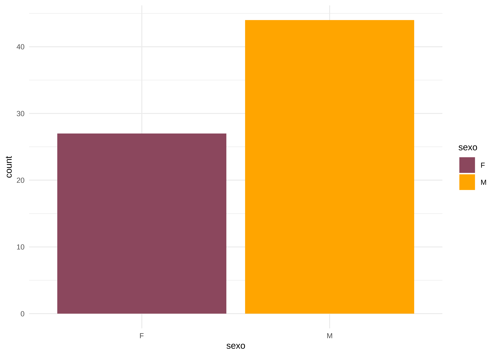
Barras (bivariado)
Cuando cruzamos dos variables categóricas, podemos representar la relación entre ambas modificando el argumento position de geom_bar().
El argumento position = "stack" nos muestra los valores absolutos acumulados:
datos |>
# Omitimos los NA de sexo y trabaja
drop_na(sexo, trabaja) |>
# Generamos gráfico de barras
ggplot(aes(x = sexo, fill = trabaja)) +
geom_bar(position = "stack") +
scale_fill_brewer(palette = "Set1") +
theme_minimal()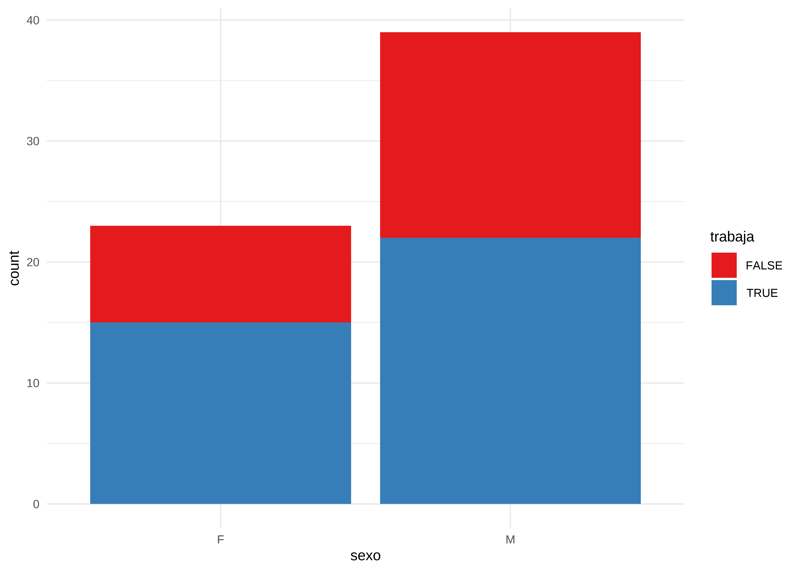
Por otro lado, el argumento position = “dodge” muestra las barras lado a lado, permitiendo comparar proporciones entre grupos:
datos |>
# Omitimos los NA de sexo y trabaja
drop_na(sexo, trabaja) |>
# Generamos gráfico de barras
ggplot(aes(x = sexo, fill = trabaja)) +
geom_bar(position = "dodge") +
scale_fill_brewer(palette = "Set1") +
theme_minimal()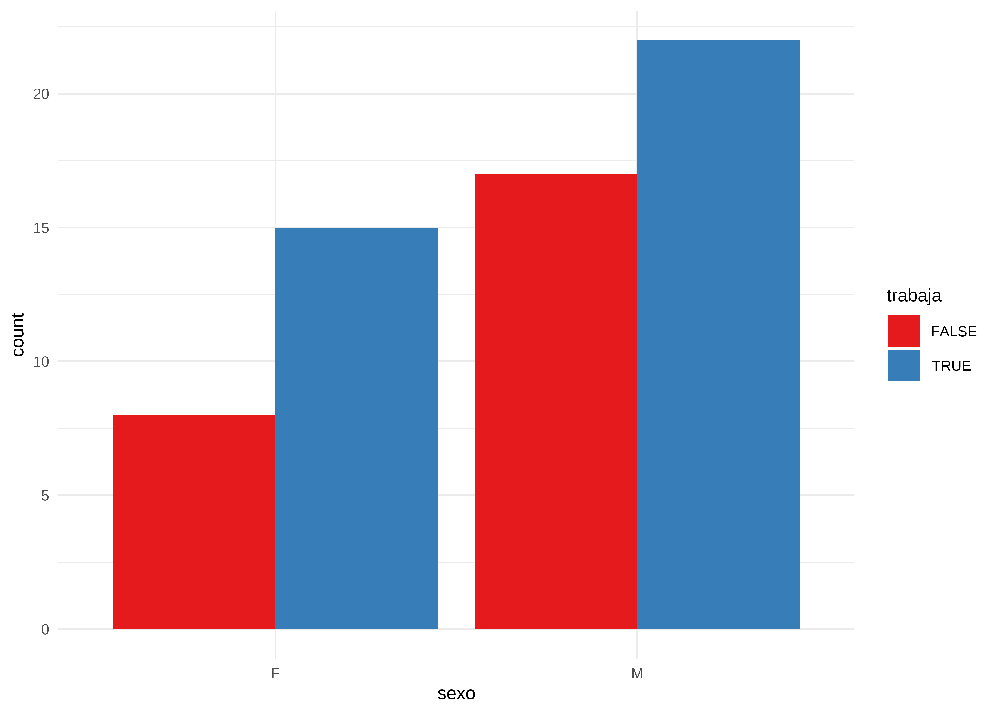
Finalmente, position = "fill" convierte las alturas en proporciones sobre el total por grupo:
datos |>
# Omitimos los NA de sexo y trabaja
drop_na(sexo, trabaja) |>
# Generamos gráfico de barras
ggplot(aes(x = sexo, fill = trabaja)) +
geom_bar(position = "fill") +
scale_fill_brewer(palette = "Set1") +
theme_minimal()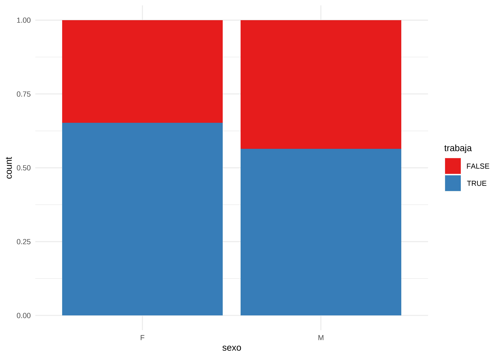
Histograma
Representa la frecuencia de valores en intervalos definidos. Útil para observar la forma general de la distribución:
datos |>
# Genera histograma
ggplot(aes(x = edad)) +
geom_histogram(binwidth = 10,
fill = "royalblue1",
color = "white"
)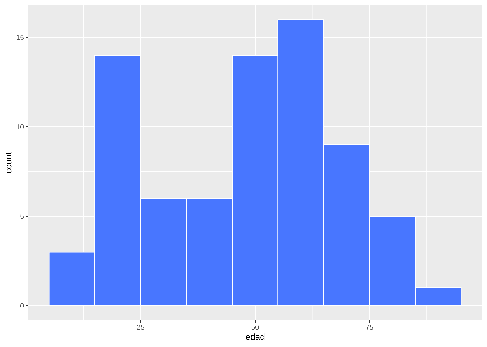
Densidad
Es una estimación suave de la distribución de frecuencias:
datos |>
ggplot(aes(x = edad)) +
geom_density(fill = "thistle1") 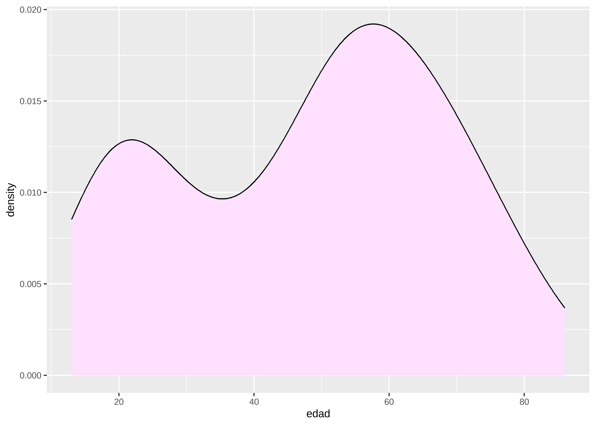
Boxplot
Muestra el rango intercuartílico, la mediana y los valores atípicos. Ideal para detectar asimetrías y outliers:
datos |>
# Genera boxplot
ggplot(aes(x = edad)) +
geom_boxplot(fill = "seagreen4") 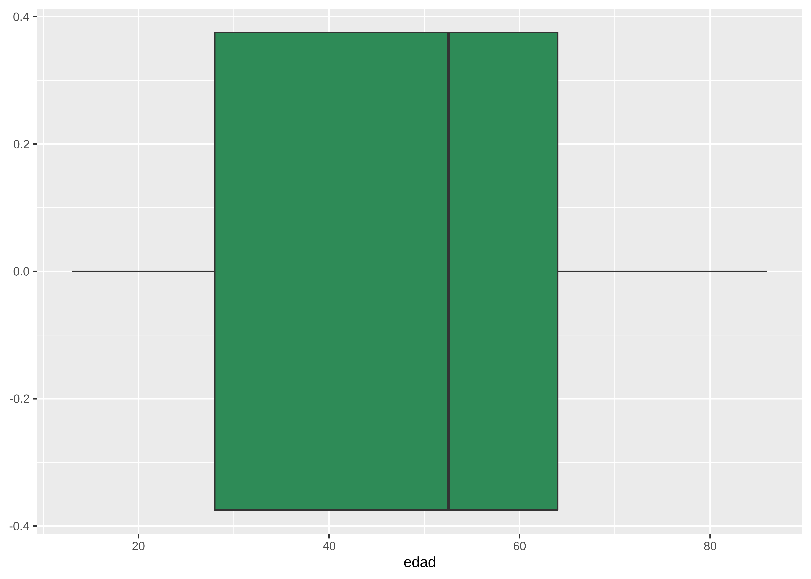
Violinplot
Combina el boxplot con una curva de densidad reflejada. Permite visualizar tanto la forma de la distribución como los cuantiles:
datos |>
# Omitimos los NA de sexo
drop_na(sexo) |>
# Genera violinplot
ggplot(aes(x = edad, y = sexo, fill = sexo)) +
geom_violin() +
scale_fill_brewer(palette = "Set2") +
theme_light()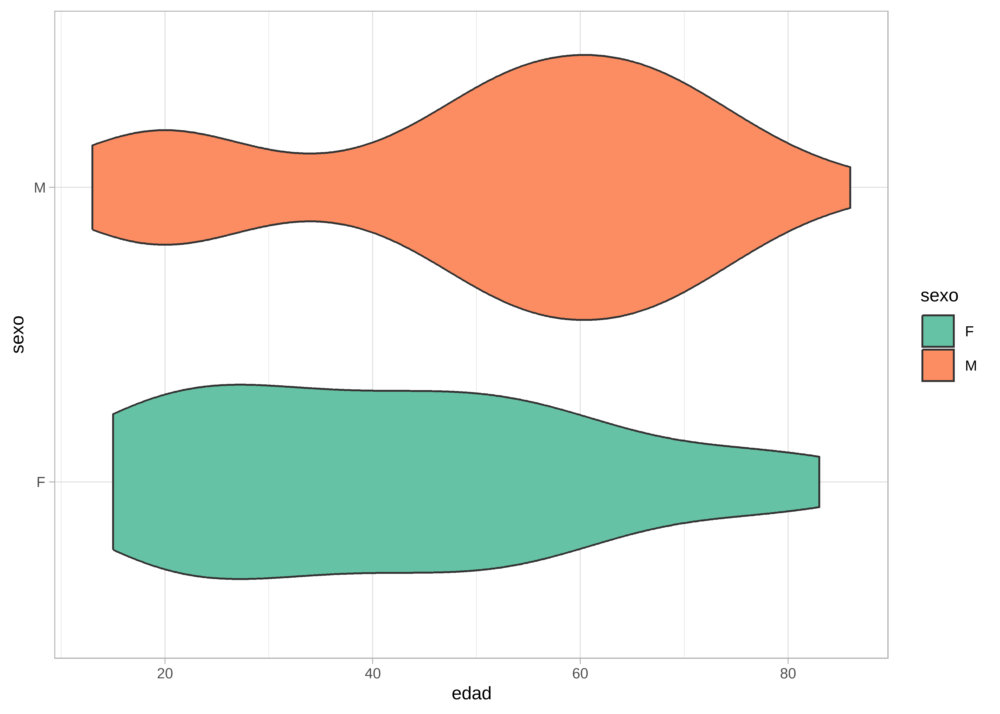
Q-Q Plot
Los gráficos Q-Q (cuantil-cuantil) permiten evaluar visualmente si una variable sigue una distribución teórica, como la normal. Suelen usarse como método gráfico para analizar “normalidad”, es decir cuanto se asemeja la distribución de la variable a la distribución normal o gaussiana.
La función plot_normality() de dlookr muestra un diagnóstico gráfico de normalidad de una variable usando histogramas y Q-Q plot. Además muestra otros histogramas con conversiones de datos (logarítmico y raíz cuadrada por defecto, pero también “Box-Cox” y otras):
# Sobre la variable edad
datos |>
plot_normality(edad)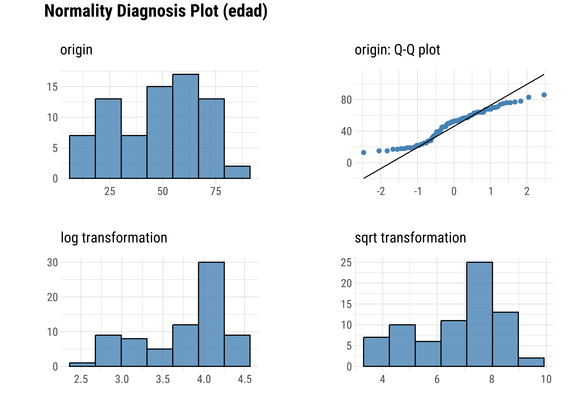
# Sobre la variable peso
datos |>
plot_normality(peso)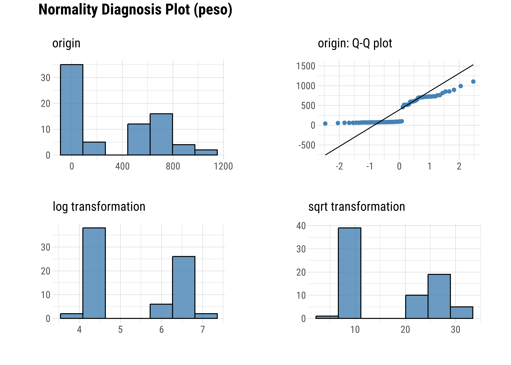
Podemos decir que la variable peso se ajusta mejor a una distribución normal, ya que los puntos del Q-Q plot se alinean más cercanamente a la diagonal teórica.
Nota: Este análisis gráfico de normalidad suele complementarse con pruebas estadísticas específicas, que abordaremos en la Unidad 2.
Detección de valores atípicos
Un valor atípico (outlier) es una observación que se encuentra numéricamente alejada del resto de los datos. Su presencia puede tener diferentes causas, y su tratamiento dependerá del contexto:
Errores de carga o procedimiento: deben corregirse si se detectan.
Valores extremos plausibles: pueden ser válidos, pero conviene evaluarlos en detalle.
Eventos extraordinarios o causas desconocidas: si no se pueden justificar, suelen excluirse del análisis.
Estos valores pueden afectar sensiblemente ciertos estadísticos como la media, distorsionando su interpretación.
Una forma gráfica común de detectar valores atípicos es mediante los boxplots. Los puntos situados fuera de los “bigotes” representan posibles outliers.
A continuación, se presenta un ejemplo con la variable peso, donde se observa un valor extremo en el límite superior de la distribución (punto rojo):
datos |>
ggplot(aes(x = peso)) +
geom_boxplot(fill = "darkkhaki",
outlier.color = "red"
) 
Este valor coincide con el máximo observado:
max(datos$peso)[1] 1105El paquete dlookr incluye la función diagnose_outlier() para la detección automatizada de valores atípicos en todas las variables numéricas de un conjunto de datos:
diagnose_outlier(datos)# A tibble: 4 × 6
variables outliers_cnt outliers_ratio outliers_mean with_mean without_mean
<chr> <int> <dbl> <dbl> <dbl> <dbl>
1 id 0 0 NaN 37.5 37.5
2 edad 0 0 NaN 48.1 48.1
3 peso 0 0 NaN 358. 358.
4 talla 10 13.5 1630 363. 165. Esta función devuelve una tabla que incluye, para cada variable: cantidad y proporción de outliers detectados, media de la variable incluyendo los outliers, media de la variable excluyendo los outliers. En función de estos dos estadísticos se puede comparar el efecto de los valores atípicos en la media.
El paquete skimr (Waring et al. 2022) permite obtener un resumen estadístico compacto y amigable de un conjunto de datos mediante la función skim():
skim(datos)| Name | datos |
| Number of rows | 74 |
| Number of columns | 7 |
| _______________________ | |
| Column type frequency: | |
| character | 1 |
| Date | 1 |
| logical | 1 |
| numeric | 4 |
| ________________________ | |
| Group variables | None |
Variable type: character
| skim_variable | n_missing | complete_rate | min | max | empty | n_unique | whitespace |
|---|---|---|---|---|---|---|---|
| sexo | 3 | 0.96 | 1 | 1 | 0 | 2 | 0 |
Variable type: Date
| skim_variable | n_missing | complete_rate | min | max | median | n_unique |
|---|---|---|---|---|---|---|
| fecha | 0 | 1 | 2020-10-20 | 2020-12-15 | 2020-11-11 | 11 |
Variable type: logical
| skim_variable | n_missing | complete_rate | mean | count |
|---|---|---|---|---|
| trabaja | 9 | 0.88 | 0.6 | TRU: 39, FAL: 26 |
Variable type: numeric
| skim_variable | n_missing | complete_rate | mean | sd | p0 | p25 | p50 | p75 | p100 | hist |
|---|---|---|---|---|---|---|---|---|---|---|
| id | 0 | 1 | 37.50 | 21.51 | 1 | 19.25 | 37.5 | 55.75 | 74 | ▇▇▇▇▇ |
| edad | 0 | 1 | 48.07 | 20.12 | 13 | 28.00 | 52.5 | 64.00 | 86 | ▇▃▇▇▃ |
| peso | 0 | 1 | 358.05 | 323.31 | 42 | 75.00 | 91.5 | 700.50 | 1105 | ▇▁▂▃▁ |
| talla | 0 | 1 | 363.09 | 504.93 | 148 | 161.00 | 166.0 | 173.75 | 1745 | ▇▁▁▁▁ |
Además, puede integrarse fácilmente con la gramática tidyverse. Por ejemplo, podemos explorar estadísticas descriptivas de variables numéricas agrupadas por sexo:
datos |>
# Excluye NAs de sexo
drop_na(sexo) |>
# Agrupa por sexo
group_by(sexo) |>
# Solo variables numéricas - id
select(where(is.numeric), -id) |>
# Explora outliers
skim()| Name | select(…) |
| Number of rows | 71 |
| Number of columns | 4 |
| _______________________ | |
| Column type frequency: | |
| numeric | 3 |
| ________________________ | |
| Group variables | sexo |
Variable type: numeric
| skim_variable | sexo | n_missing | complete_rate | mean | sd | p0 | p25 | p50 | p75 | p100 | hist |
|---|---|---|---|---|---|---|---|---|---|---|---|
| edad | F | 0 | 1 | 41.89 | 19.64 | 15 | 26.00 | 39.0 | 54.50 | 83 | ▇▃▅▃▂ |
| edad | M | 0 | 1 | 51.59 | 19.56 | 13 | 40.75 | 55.5 | 64.75 | 86 | ▅▂▅▇▂ |
| peso | F | 0 | 1 | 426.78 | 300.85 | 42 | 70.50 | 516.0 | 677.00 | 856 | ▇▁▃▃▆ |
| peso | M | 0 | 1 | 306.95 | 331.27 | 64 | 78.00 | 86.5 | 647.00 | 1105 | ▇▁▁▂▁ |
| talla | F | 0 | 1 | 421.74 | 562.57 | 148 | 155.50 | 161.0 | 167.50 | 1625 | ▇▁▁▁▂ |
| talla | M | 0 | 1 | 340.77 | 485.79 | 158 | 164.00 | 168.5 | 177.25 | 1745 | ▇▁▁▁▁ |
En este ejemplo, mostramos resultados de variables numéricas menos de id agrupados por sexo (sin considerar valores NA en las categorías de sexo).